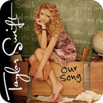
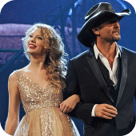
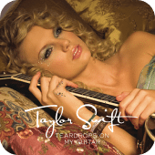
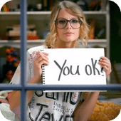
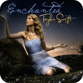
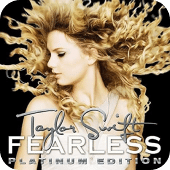
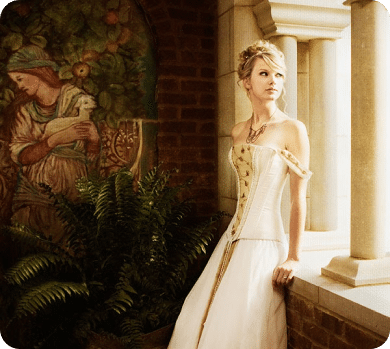

Taylor Swift (2006):
"Tim McGraw": This song, from her self-titled debut album, marked the beginning of Taylor Swift's career. It's a country ballad that reminisces about a summer love. The inclusion of the name "Tim McGraw" adds a personal touch, and the song showcases Swift's storytelling ability.
"Teardrops on My Guitar": This song reflects Swift's signature style of writing about personal experiences and relationships. It's a poignant ballad that talks about unrequited love, and its relatable lyrics resonated with many listeners.
"Our Song": Known for its catchy melody and clever storytelling, "Our Song" is a track that describes a relationship through a series of shared moments. It became one of Taylor Swift's early hits, showcasing her talent for crafting catchy, narrative-driven songs.
Fearless (2008):
"Love Story": A standout single from the "Fearless" album, "Love Story" blends Swift's country roots with pop elements. The song reimagines the classic Romeo and Juliet tale, offering a fairy-tale perspective on love. Its success contributed significantly to Swift's crossover into mainstream pop.
"You Belong with Me": This track is an anthem of unrequited love and the feeling of not being understood in a romantic relationship. The music video, featuring Swift in dual roles, garnered attention and reinforced her relatable image.
"Fearless": The title track and the album itself marked a pivotal moment in Swift's career. "Fearless" not only showcased her storytelling prowess but also earned her critical acclaim and numerous awards, including the Grammy Award for Album of the Year.
Speak Now (2010):
"Back to December": This song is an apology to a past love. It's notable for its emotional depth and reflective lyrics, showcasing Swift's growth as a songwriter. The incorporation of strings adds a poignant touch to the composition.
"Enchanted": "Enchanted" is a dreamy and romantic track that captures the magic of meeting someone special for the first time. The song is characterized by its wistful tone and Swift's ability to convey emotion through her vocals.
"Speak Now": The title track of the album is a bold and assertive declaration of love. The album, as a whole, further solidified Swift's reputation as a skilled storyteller, with each song narrating a different aspect of love and relationships.
 PURE ERA
PURE ERA


"Tim McGraw": This song, from her self-titled debut album, marked the beginning of Taylor Swift's career. It's a country ballad that reminisces about a summer love. The inclusion of the name "Tim McGraw" adds a personal touch, and the song showcases Swift's storytelling ability.
"Teardrops on My Guitar": This song reflects Swift's signature style of writing about personal experiences and relationships. It's a poignant ballad that talks about unrequited love, and its relatable lyrics resonated with many listeners.
"Our Song": Known for its catchy melody and clever storytelling, "Our Song" is a track that describes a relationship through a series of shared moments. It became one of Taylor Swift's early hits, showcasing her talent for crafting catchy, narrative-driven songs.
Fearless (2008):
"Love Story": A standout single from the "Fearless" album, "Love Story" blends Swift's country roots with pop elements. The song reimagines the classic Romeo and Juliet tale, offering a fairy-tale perspective on love. Its success contributed significantly to Swift's crossover into mainstream pop.
"You Belong with Me": This track is an anthem of unrequited love and the feeling of not being understood in a romantic relationship. The music video, featuring Swift in dual roles, garnered attention and reinforced her relatable image.
"Fearless": The title track and the album itself marked a pivotal moment in Swift's career. "Fearless" not only showcased her storytelling prowess but also earned her critical acclaim and numerous awards, including the Grammy Award for Album of the Year.
Speak Now (2010):
"Back to December": This song is an apology to a past love. It's notable for its emotional depth and reflective lyrics, showcasing Swift's growth as a songwriter. The incorporation of strings adds a poignant touch to the composition.
"Enchanted": "Enchanted" is a dreamy and romantic track that captures the magic of meeting someone special for the first time. The song is characterized by its wistful tone and Swift's ability to convey emotion through her vocals.
"Speak Now": The title track of the album is a bold and assertive declaration of love. The album, as a whole, further solidified Swift's reputation as a skilled storyteller, with each song narrating a different aspect of love and relationships.






PURE ERA
Taylor Swift's early discography is characterized by her ability
to craft relatable, narrative-driven songs that resonate with
listeners. The transition from country to a more pop-oriented
sound began with albums like "Fearless," setting the stage for
her later success in the pop music industry. Throughout these
albums, Swift established herself as a versatile artist with a
keen sense of storytelling and a knack for creating memorable
melodies.

# THE INCEPTION